CarND-MPC-Project project
Table of Contents
1 Kinematic Model
State vector of the model \[ x,y,\psi,v \] where \(x\) and \(y\) are the coordinates of the vehicle in local coordinate, \(\psi\) is the orientation of the car, \(v\) is the velocity.
Vehicle model has two actuators \[ \delta, a \] with \(\delta\) a steering angle and \(a\) an acceleration (throttle/brake combined).
Model difference equation: \[
\begin{array}{rcl} x_{t+1}&=&\displaystyle x_t+v_t \cos(\psi_t) dt\\ y_{t+1}&=&\displaystyle y_t+v_t \sin(\psi_t) dt\\ \psi_{t+1}&=&\displaystyle \psi_t+\frac{v_t}{L_f} \delta_t dt\\ v_{t+1}&=&\displaystyle v_t+a_t dt \end{array}\]
2 Kinematic model with errors (from lecture)
The state of the model \[ x,y,\psi,v,cte,e\psi \] is extended with \(cte\) — the cross-track error and \(e\psi\) — the orientation error.
2.1 Cross Track Error
The error between the center of the road and the vehicle's position is the cross track error: \[ cte_{t+1}=cte_t + v_t \sin(e\psi_t) dt \]
In this case \(cte_t\) can be expressed as the difference between the reference line and the current vehicle position \(y\). Assuming the reference line is a polynomial \(f(x)\): \[ cte_t=f(x_t)-y_t \]
If we substitute \(cte_t\) back into the original equation the result is: \[ cte_{t+1}=f(x_t)-y_t + v_t \sin(e\psi_t) dt \]
This can be broken up into two parts:
- \(f(x_t)-y_t\) being the current cross track error
- \(v_t \sin(e\psi_t) dt\) being the change in error caused by the vehicle's movement
2.2 Orientation Error
The orientation error: \[ e\psi_{t+1}=e\psi_t+ \frac{v_t}{L_f} \delta_t dt \] The update rule is essentially the same as \(\psi\).
\(e\psi_t\) is the desired orientation subtracted from the current orientation: \[ e\psi_t=\psi_t−\psi{des}_{t} \] where \(\psi{des}_t\) (desired \(\psi\)) and can be calculated as the tangential angle of the polynomial \(f(x)\) evaluated at \(x_t\), as \(\arctan(f'(x_t))\) with \(f'\) is the derivative of the polynomial. \[ e\psi_{t+1}=\psi_t-\psi{des}_t + \frac{v_t}{L_f} \delta_t dt \] Similarly to the cross track error this can be interpreted as two parts:
- \(\psi_t-\psi{des}_t\) being the current orientation error
- \(\frac{v_t}{L_f} \delta_t dt\) being the change in error caused by the vehicle's movement
3 Model implementation
The vehicle model is implemented in https://github.com/udacity/CarND-MPC-Quizzes/blob/master/mpc_to_line/solution/MPC.cpp
Number of forward steps is \(N = \{20, 40\}\), the time step \(dt = 0.05\). The velocity reference value is \(v_{\text{ref}}=\{20, 32\}\) m/s. The model implements the cost function \[ C = \left[\sum_{i=0}^N w_{cte} cte_i^2 + w_{e\psi} e\psi_i^2 + w_v (v_i-v_{\text{ref}})^2\right] + \left[ \sum_{i=0}^{N-1} w_{\delta} \delta_i^2 + w_a a_i^2 \right] + \left[ \sum_{i=0}^{N-2} w_{\delta'}(\delta_{i+1}-\delta_i)^2 + w_{a'}(a_{i+1}-a_{i})^2 \right] \] with different weight values \(w_{.}\) and difference equations at \(N\) time points as optimization equality constraints. The optimizer is IPOPT with CppAD symbolic differentiation procedure. The state variables are unbounded, steering angles \(\delta\) lies in range [-25, 25] degrees, acceleration values are in range [-1,1] or [-1,0.25] depending on the road complexity.
4 One step calculation of the reference track
4.1 Received step data
ptsx <- c(-32.161729999999999, -43.491729999999997, -61.090000000000003, -78.291719999999998, -93.050020000000004, -107.7717) ptsy <- c(113.361, 105.941, 92.884990000000002, 78.731020000000001, 65.34102, 50.57938) px <- -40.619999999999997 py <- 108.73 psi <- 3.7336510000000001 v <- 0.43800909999999998 plot(ptsx, ptsy, 'b') arrows(px, py, px + 10 * cos(psi), py + 10 * sin(psi), col='red')
4.2 Transformed points to the local vehicle's reference systems
xy <- mapply(function(x, y) c(x*cos(psi) + y*sin(psi), -x*sin(psi) + y*cos(psi)), x = ptsx - px, y = ptsy - py) print (xy) plot(xy[1,], xy[2,], 'b', ylim=c(-1, 12)) arrows(0, 0, 10, 0, col='red')
paste(c("X: ", xy[1,]) ,collapse=' ') paste(c("Y: ", xy[2,]) ,collapse=' ')
[1] "X: -9.60304259089076 3.93940137227534 25.8285057832489 48.0012942525802 67.7201992157065 88.1741885507836" [1] "Y: 0.877533697608325 0.71166777432672 1.724392909049 3.8695011146151 6.7442717046266 10.7776571055713"
4.3 Fitting a cubic polynomial
coeffs <- lm(formula = xy[2,] ~ xy[1,] + I(xy[1,]^2) + I(xy[1,]^3)) print(coeffs) track <- function(x) coef(coeffs)[1] + coef(coeffs)[2] * x + coef(coeffs)[3] * x^2 + coef(coeffs)[4] * x^3
Call: lm(formula = xy[2, ] ~ xy[1, ] + I(xy[1, ]^2) + I(xy[1, ]^3)) Coefficients: (Intercept) xy[1, ] I(xy[1, ]^2) I(xy[1, ]^3) 7.443e-01 2.145e-03 1.351e-03 -9.852e-07
plot(xy[1,], xy[2,], 'b', ylim=c(-1, 12)) xx <- seq(min(xy[1,]), max(xy[1,]), length=50) lines(xx, lapply(xx, track), type="l", col="red") arrows(0, 0, 10, 0, col='red')

5 Simulation results
5.1 First try with \(v_{\text{ref}}=20\) m/s and \(V_{\text{max}}=26.3\) mph
In the first both activation values and changes in activation values are penalized with weight values 100, so the cost function is \[ C = \left[\sum_{i=0}^N cte_i^2 + e\psi_i^2 + (v_i-v_{\text{ref}})^2\right] + 100 \left[ \sum_{i=0}^{N-1} \delta_i^2 + a_i^2 \right] + 100 \left[ \sum_{i=0}^{N-2} (\delta_{i+1}-\delta_i)^2 + (a_{i+1}-a_{i})^2 \right] \]
The track results is
reset set terminal png size 1600,1000 set title "Track" set xlabel "x" set xlabel "y" plot 'data/first.data' using ($1):($2) with lines lw 5 title 'Road', \ 'data/first.data' using 1:2:($4*cos($3)):($4*sin($3)) with vectors head filled lt 2 title 'Velocity'

Vehicle's speed is settled at \(\approx 26.3\) mph.
reset set terminal png size 640,480 set title "Speed" set xlabel "Step" set yrange [0:30] set ytics 0,5,30 plot 'data/first.data' using 0:($4*3600/1609.34) with lines title 'V, mph'

and the cost function at \(\approx 1300\)
reset set terminal png size 640,480 set title "Cost" set xlabel "Step" set yrange [0:8000] set ytics 0,2000,8000 plot 'data/first.data' using 0:($5) with lines title 'Cost'

so acceleration value \(a\) is almost constant at \(0.225\)
reset set terminal png size 640,480 set title "Actuators" set xlabel "Step" set yrange [-1:1] set ytics -1,0.5,1 plot 'data/first.data' using 0:($6) with lines title 'delta', \ 'data/first.data' using 0:($7) with lines title 'a'
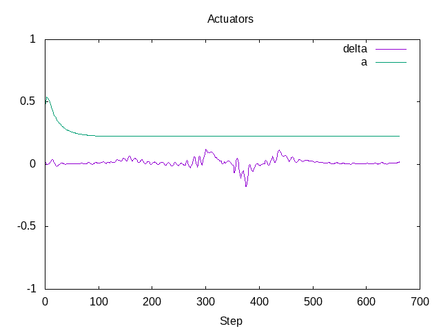
5.2 Second try with \(v_{\text{ref}}=20\) m/s and average speed 45 mph
In this try change in the acceleration is not penalized but change of the steering angle is penalized at most, also error in the velocity is penalized less than the cross-track error and the error in \(\psi\), so the cost function is \[ C = \left[\sum_{i=0}^N cte_i^2 + e\psi_i^2 + 10^{-1}(v_i-v_{\text{ref}})^2\right] + \left[ \sum_{i=0}^{N-1} 1000 \delta_i^2 + 50 a_i^2 \right] + 50000 \sum_{i=0}^{N-2} (\delta_{i+1}-\delta_i)^2 \]
The track result
reset set terminal png size 1600,1000 set title "Track" set xlabel "x" set xlabel "y" plot 'data/second.data' using ($1):($2) with lines lw 5 title 'Road', \ 'data/second.data' using 1:2:($4*cos($3)):($4*sin($3)) with vectors head filled lt 2 title 'Velocity'
Vehicle's speed oscillates near the reference value \(\approx 45\) mph:
reset set terminal png size 640,480 set title "Speed" set xlabel "Step" set yrange [0:60] set ytics 0,5,60 plot 'data/second.data' using 0:($4*3600/1609.34) with lines title 'V, mph'
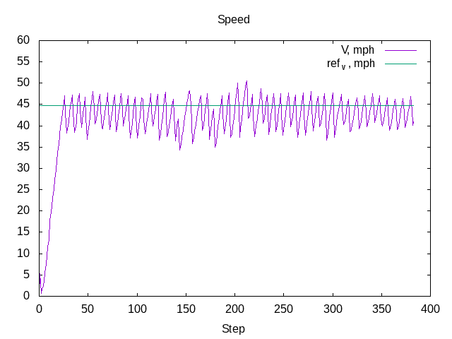
The cost function goes down and has multiple maxima at turns
reset set terminal png size 640,480 set title "Cost" set xlabel "Step" set yrange [0:1500] set ytics 0,500,1500 plot 'data/second.data' using 0:($5) with lines title 'Cost'
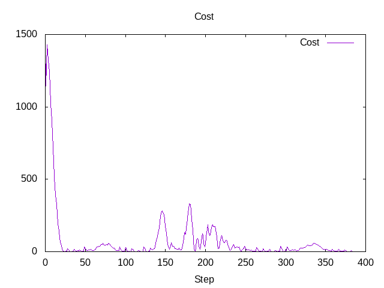
Acceleration value \(a\) shows a bang-bang controller behavior
reset set terminal png size 640,480 set title "Actuators" set xlabel "Step" set yrange [-2:2] set ytics -1,0.5,1 plot 'data/second.data' using 0:($6) with lines title 'delta', \ 'data/second.data' using 0:($7) with lines title 'a'
5.3 Third try with \(v_{\text{ref}}=32\) m/s and top speed \(72\) mph
In this try change in the acceleration is not penalized but change of the steering angle is penalized at most, so the cost function is \[ C = \left[\sum_{i=0}^N cte_i^2 + e\psi_i^2 + 10^{-1}(v_i-v_{\text{ref}})^2\right] + \left[ \sum_{i=0}^{N-1} 100 \delta_i^2 + 5 a_i^2 \right] + 5000000 \sum_{i=0}^{N-2} (\delta_{i+1}-\delta_i)^2 \]
Also to prevent acceleration in turns the positive acceleration constraint is set to 0.25 if the tracks has S-shape turns in the time horizon.
The track result
reset set terminal png size 1600,1000 set title "Track" set xlabel "x" set xlabel "y" plot 'data/third.data' using ($1):($2) with lines lw 5 title 'Road', \ 'data/third.data' using 1:2:($4*cos($3)):($4*sin($3)) with vectors head filled lt 2 title 'Velocity'
Vehicle's speed oscillates near the reference value \(\approx 45\) mph:
reset set terminal png size 640,480 set title "Speed" set xlabel "Step" set yrange [0:80] set ytics 0,10,80 plot 'data/third.data' using 0:($4*3600/1609.34) with lines title 'V, mph'
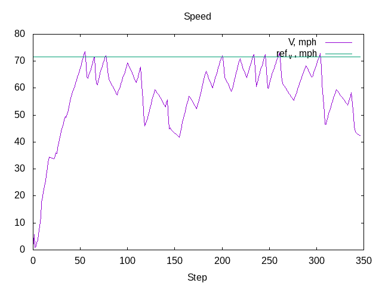
The cost function goes down and has multiple maxima at turns
reset set terminal png size 640,480 set title "Cost" set xlabel "Step" set yrange [0:4000] set ytics 0,500,4000 plot 'data/third.data' using 0:($5) with lines title 'Cost'
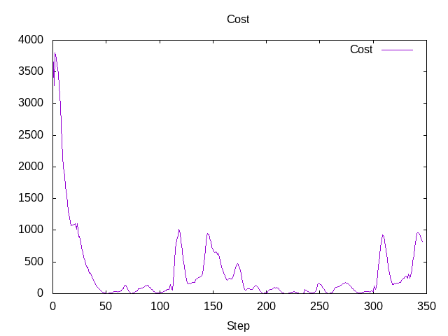
Acceleration value \(a\) shows a bang-bang controller behavior with 0.25 constraint near complex turns, so instead of acceleration-breaking cycles as in the second try the vehicle performs fast-slow acceleration cycles with sporadic short breaking.
reset set terminal png size 640,480 set title "Actuators" set xlabel "Step" set yrange [-2:2] set ytics -1,0.5,1 plot 'data/third.data' using 0:($6) with lines title 'delta', \ 'data/third.data' using 0:($7) with lines title 'a'
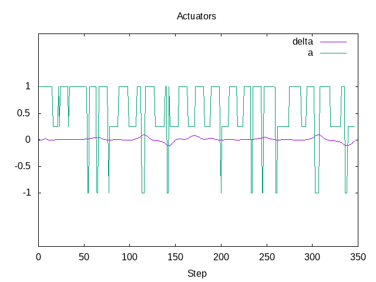
5.4 Fourth try with maximal speed 112 mph
Another possibility is to control the reference velocity by the curvature of the road segment in the time horizon.
The curvature for the fitted cubic polynomial \(\kappa(x)\) is be computed as
\[{{6\,c_{3}\,x+2\,c_{2}}\over{\left(\left(3\,c_{3}\,x^2+2\,c_{2}\,x+ c_{1}\right)^2+1\right)^{{{3}\over{2}}}}}\]
Curvature \(\kappa(x)\) for the first step
The reference velocity is computed by the logistic function with the average squared curvature as the argument \[ \bar{\kappa} = \frac{1}{x_{\max} - x_{\min}} \int_{x_{\min}}^{x_{\max}} \kappa(x)^2 dx \]
and \[ \text{ref}_v = 50 - \frac{30}{1+\exp\{-5\cdot 10^4 (x-1.2\cdot {10^4})\}} \] with 50 m/s (112 mph) maximal speed and 20 m/s (45 mph) speed in turns. Parameters \(-5\cdot 10^4\) and \(1.2\cdot {10^4}\) represent turning style:
- \(1.2\cdot {10^4}\) activation average quadratic curvature to reduce speed
- \(-5\cdot 10^4\) steepness of the speed reduction
reset set terminal png size 640,480 set title "Reference velocity" set xlabel "k\342\200\276" plot [0:4e-4] (50 - 30 / (1 + exp(-.5e5*(x-1.2e-4)))) title 'ref_v, [m/s]'
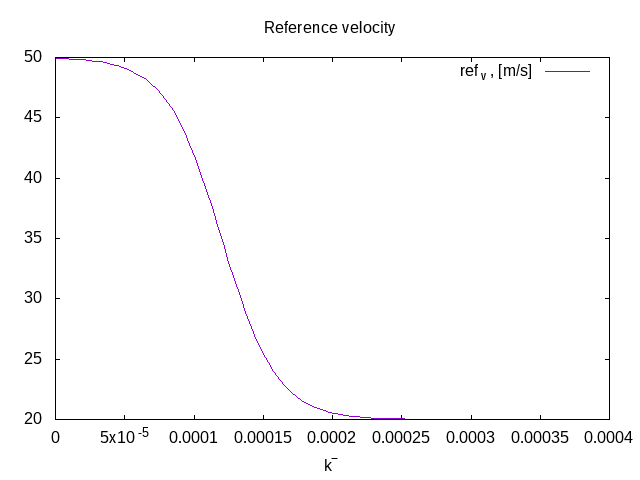
The track result
reset set terminal png size 1600,1000 set title "Track" set xlabel "x" set xlabel "y" plot 'data/fourth.data' using ($1):($2) with lines lw 5 title 'Road', \ 'data/fourth.data' using 1:2:($4*cos($3)):($4*sin($3)) with vectors head filled lt 2 title 'Velocity'
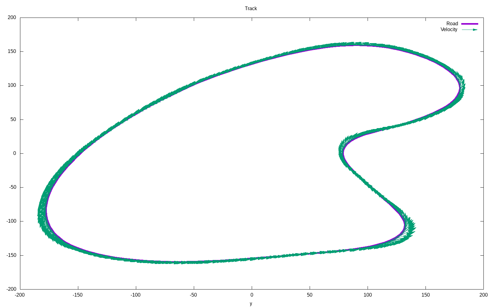
Vehicle's speed oscillates between 40 and 100 mph with acceleration on straight road segments and fast speed reduction in turns
reset set terminal png size 640,480 set title "Speed" set xlabel "Step" set yrange [0:100] set ytics 0,10,100 plot 'data/fourth.data' using 0:($4*3600/1609.34) with lines title 'V, mph'
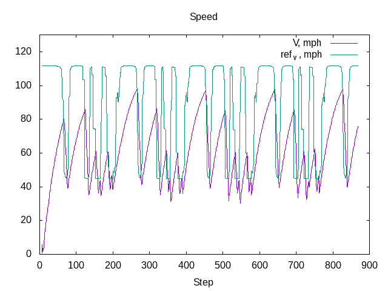
The cost function
reset set terminal png size 640,480 set title "Cost" set xlabel "Step" set yrange [0:8000] set ytics 0,1000,8000 plot 'data/fourth.data' using 0:($5) with lines title 'Cost'
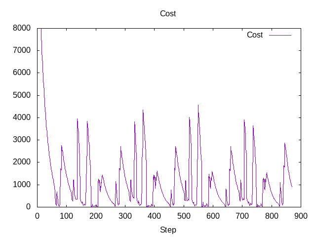
Acceleration value \(a\) shows a bang-bang controller behavior as in the second try, but now acceleration segments are larger with shorter breaking segments.
reset set terminal png size 640,480 set title "Actuators" set xlabel "Step" set yrange [-2:2] set ytics -1,0.5,1 plot 'data/fourth.data' using 0:($6) with lines title 'delta', \ 'data/fourth.data' using 0:($7) with lines title 'a'
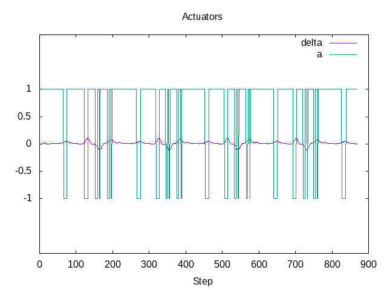
6 Summary
With help of different sets of weight values \(w_{.}\) and reference values it is possible to make different driving styles:
- very safe driving by penalizing acceleration
- driving with constant average speed with 0 acceleration change penalty and high penalty for steering angle changes
- driving with high speed by increasing reference velocity and adjusting upper bounds for acceleration that prevents acceleration in turns
- setting reference velocity based on the map or predicted horizon values results in human-like driving